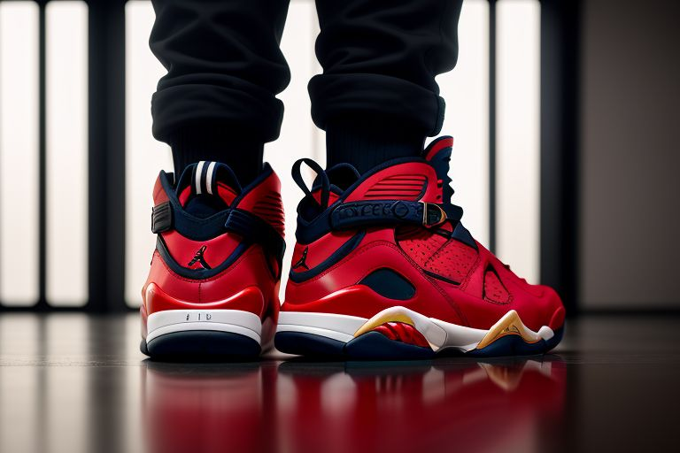
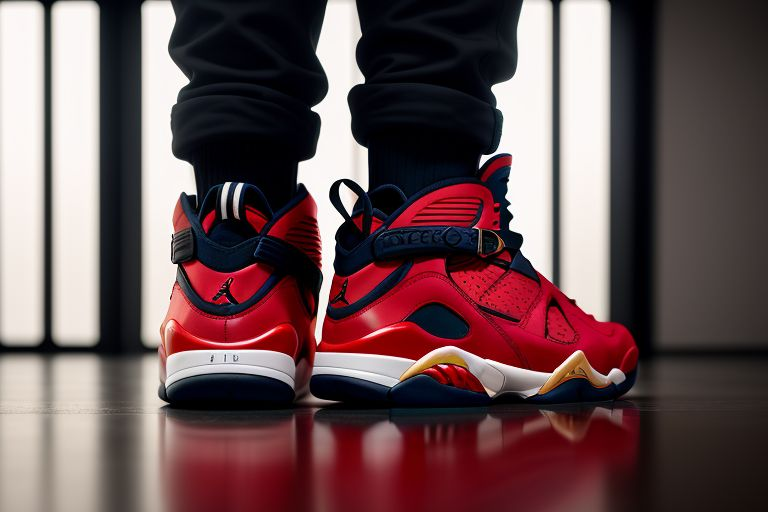

Nike VaporMax Svart 2020 modell
 

Nike Huarache 2013-Re-Release
Jordan 8 special edition
Nike VaporMax
Den nye Nike Vapormax 2017 med ny antislip
Nike Huarache
Den nye Nike Huarache utviklet for en universell stil
Jordan 8
Den nye Nike Air Jordan 8 kommer med en glisen rød og svart fargestil

Adidas Ultraboost med ny boost material
Jordan 4 av Nike Air Jordan kolleksjonen
Jordan 11 special edition
Adidas Ultraboost
Adidas Ultraboost kommer med innebygd boost
Jordan 4
Helsvarte Jordan 4 passer for og med mange klesstiler!
Jordan 11
Jordan 11 representerer en ny stil
Vi selger også mange andre typer av sko noen av kategoriene våre er Tursko, joggesko og vintersko